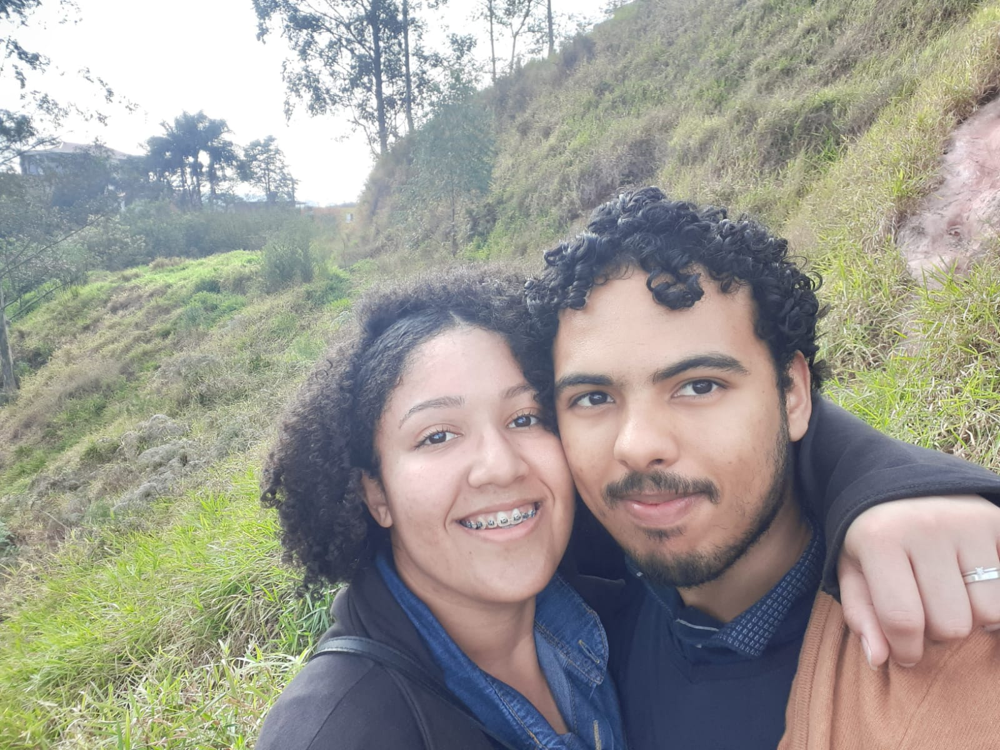

Para o meu amor, Duda
Amor da minha vida, este site tem como objetivo mostrar o que passei com você, minhas experiências, expectativas e conclusões do tempo que passamos juntos. Como você é curiosa, já aviso que foi além das minhas expectativas!!! 💖😍
Da tela para a realidade ❤️📱❤️
É amor, aqui você vai passar por um resumo reflexivo do que vivemos. Isso é muito importante para termos noção do quanto evoluímos e do quão importantes somos um para a vida do outro. Éramos duas pessoas sem expectativas, rsrs; o amor não era nosso foco, mas eu não pude me conter ao te ver, seja pelo casamento do Nael, onde você me chamou a atenção (mesmo a 2 metros de distância, kk), e principalmente no Facebook, onde tive a sorte de encontrá-la e que Deus me deu esperança para arriscar um novo palpite do que viria a ser, no mínimo, uma amizade... Mas Deus abençoou nós dois, e algo tão complexo para mim e relativamente novo acabou se tornando tão fácil, pois nos adaptamos muito bem. Era muito cedo para dizer que estava apaixonado naquela época, mas a minha reação naquele ponto de ônibus é uma prova de que eu realmente estava; as lágrimas não mentem, hahaa. O importante é que o amor não tem tempo, planejamento e nem lugar para acontecer; simplesmente vem e, com Deus aprovando, a relação só tende a aumentar e se fortalecer ainda mais. E posso dizer tranquilamente que sinto isso mais forte do que nunca!!!
Irmã, amiga e amor da minha vida ❤️❤️❤️
É difícil definir o que você é para mim; simplesmente dizer que é o amor da minha vida parece simplista demais para o que você demonstrou nesta jornada comigo. A complexidade que vivenciamos juntos é algo muito íntimo e questionável. Por que passamos por tudo isso? Por que não tivemos uma jornada simples? A resposta está além de nós, amor, pois, mesmo com sofrimentos, tristezas e abalos, tivemos um forte amadurecimento. Sua clareza sobre mim e aceitação demonstra um forte senso de irmandade entre nós, como se você fosse da família da mesma mãe, sabe? São tantas coincidências e adaptações a cada vivência nossa que posso dizer que é como uma irmã para mim; também uma amiga, pois esteve ao meu lado nos momentos mais difíceis, mostrando que, mesmo quando o amor fraqueja, seja pela situação ou por uma queda na relação, você teve uma compreensão além do amor e cuidou de mim. Não apenas chorou, mas me levantou e me apoiou a reverter a situação. Isso se encaixa como amor, mas coloquei na parte de amizade pela cautela e apoio que me deu, que era o que eu estava precisando, não só carinho, mas um rumo para me livrar da queda. E, por último e mais importante, você é para mim o amor da minha vida, pois sempre esteve comigo, me dando carinho e amor, cuidando de mim e sempre pensando em mim. Diria que sair de casa sabendo que tem alguém apaixonado por você e contando os minutos para te ver e estar com você é uma motivação enorme que conforta muito. Você é excelente nisso, meu amor, e me sinto amado todos os dias por isso. Muito obrigado por ser essa mulher maravilhosa e por ter me escolhido!!! ❤️❤️❤️❤️❤️
Momentos marcantes
Não somos muito fotogênicos, é uma marca registrada nossa kkkk, mas tive a autonomia de registrar três momentos para relembrarmos ❤️😍😊

Um dia extremamente especial, quando completamos 1 ano de namoro, algo completamente desejado por nós e que passou tão rápido, né? Quando vejo essa foto, lembro de cada momento de evolução que tivemos, principalmente na intimidade. Seu esforço e meu para aceitar que éramos um casal foi algo único e engraçado também. Lembra de quando não nos beijávamos muito? Tinha que ser paciente e entender seu momento. São esses pequenos detalhes que mais gosto de recordar, amor. Obrigado por passar isso comigo ❤️
Dia maravilhoso, onde pude me aproximar mais da sua família e ver vc bem alegre por realizar um sonho que tanto queria, apesar de seu lado torcedora me assustar no começo kkkk foi algo que acabei me acostumando, foi uma otima experiência ❤️

Aqui foi o início de nosso relacionamento, algo cravado e regido por Deus, o momento que passamos a ser namorados, em que o mundo soube de que estamos unidos pelo amor e que somos um casal perfeito, temos que fazer um quadro disso, pois foi profetico hein kk ❤️❤️❤️❤️❤️❤️